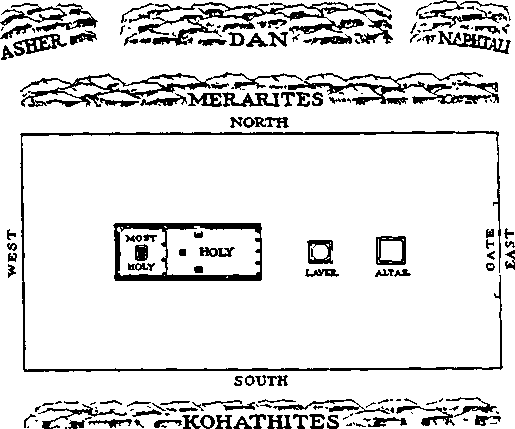

ifc.
ir
-1
S’
I;
■a
1‘
vjt
32
>.
■s:
-Ira#
‘J
i,1
■J
ISSgiSSES
.41
') -I I'
LiJ
II
15
it
Vol. LXIII Semimonthly
AUGUST 15, 1942
No. 16
CONTENTS
Atonement for the New World (Part 2) .....................................
Hopeful Shadows ...........................
Atonement Day ................................
The Tabernacle.................................
Bullock of the Sin-Offering ...........
Righteous ................................
“Goats for a Sin Offering” ..........
Lord’s Goat and Scapegoat ............
“Propitiation for Our Sins” ..........
Sprinkling of Blood .....................
Singing Till God’s “Strange Act' Theocratic Assembly,
September 18, 19 and 20 ..........
Field Experiences ............................
“Comfort” Testimony Period..........
“Watchtower” Studies ...................
“The Emphatic Diaglott” ..............
.243 .243 .244 .245 .246 . 247 .247 ..249 .. 251
.252 ...253
254
256
242
242
242
111
-J
Mi
ft
IS
THE WATCHTOWER
Published Semimonthly By
WATCH TOWER BIBLE & TRACT SOCIETY 117 Adams Street - - Brooklyn, N.Y., U. S. A.
OFFICERS
N. H. Knorr, President W. E. Van Amburgh, Secretary
“And all thy children shall be taught of Jehovah; and great shall be the peace of thy children.” - Iraiah 54:13.
THE SCRIPTURES CLEARLY TEACH
THAT JEHOVAH Is the only true God, is from everlasting to everlasting, the Maker of heaven and earth and the Giver of life to his creatures; that the Logos was the beginning of his creation, and his active agent in the creation of all things; that the Logos is now the Lord Jesus Christ in glory, clothed with all power in heaven and earth, and the Chief Executive Officer of Jehovah.
THAT GOD created the earth for man. created perfect man for the earth and placed him upon it; that man willfully disobeyed God’s law and was sentenced to death; that by reason of Adam’s wrong act all men are born sinners and without the right to life.
THAT JESUS was made human, and the man Jesus suffered death in order to produce the ransom or redemptive price for obedient ones of mankind; that God raised up Jesus divine and exalted him to heaven above every creature and above every name and clothed him with all power and authority.
THAT JEHOVAH’S ORGANIZATION is a Theocracy called Zion, and that Christ Jesus is the Chief Officer thereof and Is the rightful King of the world; that the anointed and faithful followers of Christ Jesus are children of Zion, members of Jehovah’s organization, and are his witnesses whose duty and privilege it is to testify to the supremacy of Jehovah, declare bis purposes toward mankind as expressed in the Bible, and to bear the fruits of the kingdom before all who will hear,
THAT THE WORLD has ended, and the Lord Jesus Christ has been placed by Jehovah upon his throne of authority, has ousted Satan from heaven and is proceeding to the establishment of God's kingdom on earth.
THAT THE RELIEF and blessings of the peoples of earth can come only by and through Jehovah’s kingdom under Christ, which has now begun; that the Lord’s next great act is the destruction of Satan’s organization and the establishment of righteousness in the earth, and that under the kingdom the people of good will that survive Armageddon shall carry out the divine mandate to "fill the earth” with a righteous race.
ITS MISSION
HIS Journal Is published for the purpose of enabling the people to know Jehovah God and his purposes as expressed in the Bible. It publishes Bible instruction specifically designed to aid Jehovah’s witnesses and all people of good will It arranges systematic Bible study for its readers and the Society supplies other literature to aid in such studies. It publishes suitable material for radio broadcasting and for other means of public instruction in the Scriptures.
It adheres strictly to the Bible as authority for its utterances. It is entirely free and separate from all religion, parties, sects or other worldly organizations. It is wholly and without reservation for the kingdom of Jehovah God under Christ his beloved King. It Is not dogmatic, but invites careful and critical examination of its contents in the light of the Scriptures. It does not indulge in controversy, and its columns are not open to personalities.
Yearly Subscription Price
United States, $1 On; Canada and Miscellineo'-s roRETCN.
Great Britain, Ausm.it asia. and South Armc 1. os. American remr-tances should be made by Postal or Express Money Order or by Bink Draft Canadian, British. South African and Australasian remntam ■i should be made direct lo die respective branch offices. Remittances frmj countries other than those mentioned may be made to U.e Brooklyn oux.e, but by International Postal Money Order only.
Foreign Omens
British______________________________ 34 Craven Terrace, London, W 2, England
Canadian ............................... 40 limn Avenue, Toronto 3 Ontario, Camila
Australasian................... 7 Beresford Road, Strathfield, N'. S W , Australia
South African Boston House, Cape Town, South Africa
Picasa address the Society in every case.
(Translations of this journal appear in several languages.)
Ail sincere students of the Bible who by reason of Infirmity, poverty or adversity are unable to pay the subscription price may have The Watchtower free upon written application to the publishers, made once each year, stating tho reason for so requesting 1L IVe are giad to thus aid the needy, but the written application once each year is required by the postal regulations.
Notice to Subscribers: Acknowledgment of a new or a renewal subscription will be sent only when requested. Chance of address, when requested, may be expected to appear on address label within one month. A renewal blank (carrying notice of expiration) will be sent with the journal one month before the subscription expires
Entered as second-class matter at the post office at Brooklyn, N. F., under the Act of March 5, 1879.
“COMFORT” TESTIMONY PERIOD
To Jehovah’s witnesses the month of August is known as the “Comfort” Testimony Period During these 31 days a special effort will be made on the part of Jehovah’s witnesses to comfort as many people as they possibly can with the truths as set forth in the Word of Jehovah God. To aid those who love righteousness the book Children along with the booklet Hope will be offered to the people on a contribution of 25c These two publications set forth a message which shows there is something worth while living for. Those persons who trust in Jehovah’s kingdom and know that this is the only hope for the world will proclaim the message contained in these publications and make them available to as many persons as they can possibly meet during August. “Comfort” Testimony Period will be a blessing to all those who share in the preaching of the gospel Make your report of activity to your local company servant, or if you are not associated with a company, report direct to the Watch Tower Bible & Tract Society.
“WATCHTOWER” STUDIES
Week of September 20: “Atonement for the New World” (Part 2), J] 1-26 inclusive, The Watchtower August 15, 1942.
Week of September 27: “Atonement for the New World” (Part 2), 27-52 inclusive, The Watchtower August 15, 1942.
NEW EDITION OF "THE EMPHATIC DIAGLOTT"
There has always been a steady demand for the Greek and English “New Testament” known as “The Emphatic Diaglotl” The old edition became exhausted some months ago, and a new has been in preparation meanwhile. The desirable features of the Diaglott are many.
The actual Greek in which the “New Testament” was originally written is given according to the well-known and highly-respected Gnesbach recension. Then in footnotes variations according to the Alexandrine and Vatican (No. 1209) manuscripts are given, two of the very oldest manuscripts in existence
The Diaglott also contains a useful and valuable alphabetical appendix in the back, which is practically a compact Bible dictionary containing helpful features not found in other dictionaries of the Bible.
The binding is beautiful blue leatherette, and flexible. The paper is of good quality, and the type is clear. The size is 4J’ by 7i" by 1", which is convenient for handling.
The new edition of the Diaglott is now ready for distribution. The cost is $2 per copy.
No. LXIII
August 15, 1942
No 16
ATONEMENT FOR THE NEW WORLD
PART 2
"We hare an advocate with the Father, Jesus Christ the righteous: and he is the propitiation for our sins: and not for ours only, but also for the sins of the whole world."—1 John 2:1,2.
JEHOVAH makes provision that those who are not satisfied with their condition in this present evil world may live in the new world which He creates. This he makes possible by the great atonement. Jehovah is the Author of the atonement. The atonement, when understood, at once exalts and establishes respect for His justice. Atonement demonstrates his so great love for the new world. That world will be a “world without end”. This means it will be a world without sin, and hence a world without that which is the “wages of sin”, namely, death. In the new world death will be wiped out from this earth, and man and woman will live here in righteousness and peace, without fear of harm from man, beast, or devil, without fear of poverty, and without fear of even death.
2 The Supreme Court of all creation has ruled what sin is: “Sin is the transgression of the law”; meaning, the law of Jehovah, the Supreme Judge. “All unrighteousness is sin: and there is a sin not unto death.” (1 John 3: 4; 5: 17) All the human race is in sin; it was born so, because its first parents loved neither God nor their unborn offspring but selfishly violated the perfect law of their Creator. From their original sin has stemmed all the unrighteousness that fills the earth today, and the pleasure in and inclination unto sin have gained strength with each new generation born. Only God Almighty can check it. Only he can provide the way and means for deliverance from it and the curse of death. The impending battle of Armageddon brings destruction to those who refuse or are indifferent to God’s way and means of deliverance and who prefer to enjoy or yield to sin in this world. It will be a sudden and decided check in the progress of sin. That battle will signify a deliverance from willful practicers of unrighteousness for those who accept God’s way and means and who desire to live in the new world, the world of righteousness. That battle will vindicate the name of Jehovah God and is therefore a prime necessity; it will be a showing of His invincible power over the mighty one back of all human practice of sin, Satan the Devil: and it will mean a chaining and the abyss of restraint for that vicked one.—Rev. 20:1-3.
’The mere destruction of the willfully wicked would still leave the disability of inborn imperfection and sin upon men desiring righteousness. Their imperfection and sin make them naturally the enemies of God, because he cannot approve such things. Therefore, for his name's sake, which stands for justice and righteousness, and for the help and avail of lovers of righteousness that such might live forever, Jehovah God arranged for atonement by a sin-offering. Helpless man born of the rebel Adam could not make atonement, even by dying on a thousand battlefields, and hence it lay with Jehovah to make atonement by his perfect and only begotten Pon, who became the “man Christ Jesus”. It has been said that God does not love the sin but loves the sinner. That is not Scripturally true. God's love is for the new world of righteousness, and only those who desire and avail themselves of God’s provision to live in that righteous world God brings under his love. Such love of the world of righteousness God commends as a requirement for sinners who seek liberty and life. “But God commendeth his love toward us, in that, while we were yet sinners, Christ died for us. Much more then, being now justified by his blood, we shall be saved from wrath through him. For if, when we were enemies, we were reconciled to God by the death of his Son, much more, being reconciled, we shall be saved by his life. And not only so, but we also joy in God, through our Lord Jesus Christ, by whom we have now received the atonement.”—Rom. 5:8-11.
HOPEFUL SHADOWS
* Centuries before the great Giver of every good and perfect gift provided the atonement he made prophetic shadows which faithfully outlined the substance of good things to come for men who believe 2U
and obey Jehovah God. These “shadows’’ must bfe according to God’s law, which is just and perfect, and not according to religion or human imaginations. Hence he gave the law according to which these •‘shadows’’ were made for the comfort and hope of lovers of life in righteousness. Such law he gave to Israel, which people he brought into a covenant with himself by his prophet Moses as the mediator between God and man. This proves that only those who enter into a covenant with God to do his will and who thereafter do it will enjoy the good things foreshadowed. The shadow is not the real thing or image which casts the shadow. The shadow passes, but the body casting it remains and provides the real and lasting good effects.
5 The inspired apostle to whom Jehovah God revealed the hidden meaning of the “shadows” writes: "For the law, having a shadow of good things to come, and not the very image of the things, can never with those sacrifices which they offered year by year continually make the comers thereunto perfect.” (Ileb. 10:1) "Let no man therefore judge yon in meat, or in drink, or in lespeet of an holyday, or of the new moon, or of the sabbath days: which are a shadow of things to come: but the body is of Christ." (Col. 2: 16,17) Since the real atonement is by God's Son Christ Jesus, the same inspired writer shows to those who were once under the typical law the real purpose back of it, saying: “We were kept under the law, shut up unto the faith which should afterwards be revealed. Wherefore the law was our schoolmaster to bring us unto Christ, that we might be justified by faith. But after that faith is come, we are no longer under a schoolmaster.” (Gal. 3:23-25) The shadow passes, because it is fulfilled by the reality.
6 The nation of Israel, of whom the prophet Moses was a member, was brought under the law which commanded these prophetic "shadows" or types to be performed regularly by living actors. (Ps. 147 :19, 20) Prior thereto the Israelites were cruelly oppressed while residing in the land of Egypt. Likewise those who come into relationship with God by devoting themselves to him through Christ to do God's will have been oppressed by this present evil world, symbolized by Eg\pt. God raised up unto his oppressed people a deliverer, Moses, who foreshadowed God’s great Warrior at the battle of Armageddon, Christ Jesus.
’ Leading up to their deliverance from the worldly organization of Egypt Jehovah God by Moses commanded the Israelites to sacrifice the passover lamb and to feast thereon. This foreshadowed that prior to the great deliverance at Armageddon by the destruction of Satan’s world God would provide the atonement by the real sacrifice, “the Lamb of God,” who takes away the sin of those who will live in the new world. (John 1:29,36) The typical passover lamb slain in Egypt took the place of God’s mediator for Israel, namely, Moses, and Moses himself foreshadowed or typified Christ Jesus. The slaying of that passover lamb was the beginning of God’s lawcovenant with Israel, because by the lifeblood of that sacrifice the covenant was made valid, binding and operative. (Heb. 9:16,17) This pictured that no human creature can enter into a covenant with God to do His will except through the atonement which God provides in his Son, “the Lamb of God." After the first passover sacrifice and feast came Israel's deliverance by the destruction of Egypt’s firstborn. Quickly thereafter came the destruction of Pharaoh’s armies and chariots by Jehovah’s strange act at the Red sea. Both destructions upon Egypt pictured destruction of both visible and invisible parts of Satan's world, both wicked men and demons.— Exodus, chapters twelve to fifteen.
ATONEMENT DAY
* In the third month, after the Israelites under Moses safely crossed the Red sea out of Egypt, they reached the base of Mount Sinai in Arabia. There Jehovah God confirmed the covenant he had made with them in Egypt and gave to them the larger statement of his typical law, including the ten commandments. The dedication of that law covenant is briefly described at Hebrews 9:16-22: “For where a covenant exists, the death of that which has ratified it is necessary to be produced; because a covenant is firm over dead victims, since it is never valid when that which ratifies it is alive. Hence not even the first [law covenant] has been instituted without blood. For every commandment in the law having been spoken by Moses to all the people, taking the blood of bullocks and of goats, with water, and scarlet wool, and hyssop, he sprinkled both the book [of the law] itself, and all the people, saying, ’This is the blood of the covenant which God enjoined on you.’ And he in like manner sprinkled with the blood the tabernacle also, and all the utensils of the public service. And, according to the law, almost all things are purified by blood, and without an effusion of blood no forgiveness takes place.” (Emphatic Diaglott translation) This illustrated the need of atonement by a propitiation for sins or a sin-offering.
* Those animal sacrifices were only shadows of the real sin-offering God would provide in his due time. The animal victims being lower than man and of less value than a man’s life, the offering of the blood of these animal sacrifices could not take away human sin. They were merely pictorial of the true. Hence those sacrifices needed to be repeated after fresh commission of sins; and God so arranged for this. “For it is not possible that the blood of bulls and of goats should take away sins.” (Heb. 10:1-4) The blood of bulls and goats was offered at the dedication of the law covenant at Mount Sinai, and God commanded the offering to be repeated each year on a national day of atonement in the seventh month of the year, and on the tenth day of the month. (Lev. 16:29-31) On that day, during which da}’ they abstained from all personal works, the people of the nation showed their repentance for sins committed during the past year, and confessed them. They sought forgiveness for such, and acknowledged their need of a sin-offering outside of themselves. Thus they kept their minds turned toward the future sin-offering that God would provide.
10 Encamped at the base of the “mountain of God” from which he delivered the law by Moses, the Israelites together with the mixed multitude that accompanied them out of Egypt pictured all those for whom atonement is made and who avail themselves thereof and who shall live in the new world. Jehovah God took Israel out of the world to be his people, and hence they were to be no longer any part of this present world. God said to them: “You only have I known of all the families of the earth.” (Amos 3: 2) They were under a Theocratic rule, because Jehovah the great Theocrat was their lawgiver. Moses their mediator was the official servant of Jehovah in their behalf. Unto Moses they had been baptized in the Red sea and in the cloud which overshadowed and guided them in their journeys. (1 Cor. 10:1, 2) Moses therefore acted as a type of Christ Jesus, God's King of the Theocratic Government of the new world.
11 Jehovah God chose Moses' tribe, the tribe of Levi, to be his official servants at his sanctuary. He made Moses' brother, Aaron, who had been Moses’ mouthpiece before Pharaoh of Egypt, to be His high priest and the sons of Aaron to be underpriests. Therefore Aaron the high priest also represented the Head of Jehovah's Theocracy, Christ Jesus, but in the capacity of God’s High Priest. The rest of the house of which Aaron was a member or trilies-man. namely, the tribe of Levi, pictured the 144,000 members of the “body of Christ”, who are to be associated with Christ Jesus in The Theocracy. “They shall be priests of God and of Christ, and shall reign with him a thousand years.” (Rev. 20:6) They constitute the Theocratic royal family of Jehovah, of which family or house of sons Christ Jesus is the Head. (Heb. 3:1-6) From this standpoint, therefore, and viewed in relationship to the tribe of Levi, the remainder of the twelve tribes of Israel pictured all the people on earth whose sins are atoned for and who live on earth after Armageddon under The Theocratic Government.
THE TABERNACLE
” The typical day of atonement was observed each year at the sanctuary which Jehovah God had Moses make. It was exactly according to the pattern which God supplied, because the sanctuary was a shadow of larger realities, to be made manifest later on. The
sanctuary was a tent or tabernacle, the door of which faced toward the east. It was divided into two rooms or compartments by a beautiful veil. The doorway of the sanctuary was also covered by a hanging called “the door”. By this door one entered into the first and larger compartment, called “the holy” and which was illuminated by a golden candlestick with seven lamps. The underprie-ts were allowed by God’s law to enter and perforin service in this compartment, “the holy.” It would be death for them to pass beyond the "vail” and enter into the smaller compartment, -which was called "the most holy” or “holiest of all”.
13 In the Holiest was the sacred ark of the covenant. This was a gold-covered chest containing the tables of the ten commandments and other sacred articles, and which was covered by a gold lid surmounted by a gold cherub at each end. Both cherubs with upstretched wings looked down toward the golden lid or “mercy seat”. In an illuminated cloud between these cherubim Jehovah God manifested his presence above the mercy seat. Into this Most Holy and into the presence of God Most Holy only the high priest could come, on the day of atonement, and he must first bring in the golden censer with him and burn the holy incense thereon before offering the atonement. “And the Lord said unto Moses, Speak unto Aaron thy brother, and that he come not at all times into the holy place within the vail before the mercy seat, which is upon the ark, that he die not: for I will appear in the cloud upon the mercy seat.”—Lev. 16:2; Heb. 9:1-8.
14 The sanctuary stood in the western half of the sacred court. The court was screened off and separated from the territory outside by a hanging of linen curtains round about. The place of entry into the court was at the east, and this opening was covered over by a hanging called “the gate”. On the day of atonement the people of Israel who were not Levites were forbidden to enter that court, but the hangings of the “gate'’ were raised and they were permitted to see from a distance what went on in the court. The court itself was a rectangular area. 150 feet long by 75 feet broad. In the eastern half of the court there stood the brazen altar, midway between the “gate” of the court and the “door” of the tabernacle; and between the altar and the “door” was stationed a laver, where the priests washed in connection with the tabernacle services.
15 The court was where the animal sacrifices were slain, and the animals were therefore brought through the ’‘gate” and into the court and sacrificed at the north side of the altar. In front of the altar, or on the east side thereof, was where the ashes of the sacrifice were deposited. Accordingly the court pictured the place of sacrifice, this earth. As respects the sacrificial victim itself, the court pictured the condition of justification before God. the condition where the one sacrificed is just or right with God and hence acceptable to be offered as a sacrifice to God. The most holy of the sanctuary, however, represented heaven itself: “for Christ is not entered into the holy places made with hands [of men], which [places] are the figures of the true; but into heaven itself, now to appear in the presence of God for us.”—Heb. 9: 24.
16 The site of the court was selected, at the foot of Mount Sinai, and on the first day of the first year after Israel’s coming out of Egypt the tabernacle was erected. Outside, round about the four sides of the court, the Levites pitched their tents, with Moses and the priestly family of his brother Aaron the high priest located on the east side, in front of the gate of the court. At a respectful distance beyond the location of the Levites the other tribes of Israel and the mixed multitude with them pitched tent, and constituted the “camp”. Beyond these tribes was what was called “without the camp”. It pictured the condition of the world, the condition of those who do not take advantage of the sin-atonement, but who continue under the wrath of God and who lie in the wicked one, the Devil, and w’ho therefore perish.—1 John 5:19; John 3:35,36.
lT Those who are interested in enjoying life by God’s grace in the new world of righteousness will now follow with interest what Jehovah God ordained to be done on the typical day of atonement and which accurately foreshadows the providing and presenting and application of the sin-offering. The instructions which God gave through his Theocratic representative Moses were enacted by living actors, and a failure to perform them accurately would have meant death to the one who did not appreciate the Theocratic rule and do as instructed. The realities to be foreshadowed were too important to be treated with careless indifference and to be pictured incompletely and inexactly. It is an aw’ful thought, also, that if there had been carelessness and imperfect performance of the antitypical realities by Jehovah s great High Priest, the vindication of Jehovah’s name and word would have failed and all would have been lost for all humankind.
BULLOCK OF THE SIN-OFFERING
IS Speaking with reference to the most holy, that is, “the holy place within the vail,” representing the heaven of God’s presence, Jehovah gave this order for the day of atonement: “Thus shall Aaron come into the holy place: with a young bullock for a sin offering, and a ram for a burnt offering.” (Lev. 16: 3) This determines the time when the antitypical or real day of atonement by the true high priest began. It began in A.D. 29, when Christ Jesus came of independent age as a perfect man and presented himself in consecration for the complete service of Jehovah God and was baptized in Jordan river. God took Jesus into the covenant with Himself and Jesu> there became Jehovah’s High Priest for the offering of the atonement sacrifice.
l# For centuries down till then, ever since the first atonement day in the wilderness of Sinai, animal sacrifices had been offered, but without power and value to actually remove the disability of human sin. Had sin really been taken away for ever, there would have been but one sacrificial victim. Hence in the typical picture numerous sacrificial victims were needed, because none of them actually canceled sin; they merely foreshadowed the real Sacrifice to come. Therefore Jesus consecrated himself to take up the things pertaining to the new world; as it is written: “For it is not possible that the blood of bulls and of goats should take away sins. Wherefore, when he cometh into the world, he saith, Sacrifice and offering thou wouldest not, but a body [a perfect human body] hast thou prepared me. In burnt offerings and sacrifices for sin thou hast had no pleasure: then said I [Jesus], Lo, I come (in the volume of the book it is written of me) to do thy will, 0 God. By the which will we are sanctified, through the offering of the [perfect human] body of Jesus Christ once for all. And every [Aaronic] priest standeth daily ministering, and offering oftentimes the same sacrifices, which can never take away sins: but this man [Jesus], after he had offered one sacrifice for sins for ever, sat down on the right hand of God.”—Heb. 10:4-7,10-13.
” Aaron foreshadowed Christ Jesus in the capacity of sacrificing High Priest of Jehovah God, whereas the “'young bullock” for a sin-offering pictured “the body of Jesus Christ” as a perfect man. As such he was the exact equal of Adam in his perfection in Eden and possessed the right to life as a man on earth. Only thus could Jesus Christ have the wherewithal to present a sacrifice of sufficient value or merit to recapture for Adam’s offspring that which Adam’s transgression had lost for them. By this sacrifice of himself Christ Jesus could cancel or undo the effects of Adam’s sin toward humankind and, as it were, wash away their sins in his blood. In the type, Aaron’s “ram for a burnt offering” also pictured the man Jesus, but from a different standpoint in the picture, as will be shown later. Compare the ram that was substituted for Isaac, when God provided it for Abraham to sacrifice instead of his son. (Gen. 22:13,14) It is not stated from where Aaron procured the bullock for the sin-offering. This agrees with the fact that the life-right of the man Jesus was from God his Father, whereas his fleshly nature was from the human race.
RIGHTEOUS
21 Aaron as a man was imperfect and sinful by nature, and hence unlike the One whom he foreshadowed. Properly Jehovah gave this order: “He shall put on the holy linen coat, and he shall have the linen breeches upon his flesh, and shall be girded with a linen girdle, and with the linen mitre shall he be attired: these are holy garments; therefore shall he wash his flesh in water, and so put them on.” (Lev. 16:4) This the imperfect man Aaron must carefully do in order to picture the absolute righteousness of the greater High Priest, Christ Jesus. Concerning the saints who are his underpriests it is symbolically written that they should be “arrayed in fine linen, clean and white: for the fine linen is the righteousness of saints”. (Rev. 19:8) He loves righteousness and hates iniquity. He is crowned with righteousness and is subject to the God of righteousness, Jehovah. He girds himself to serve the cause of righteousness, which is the vindication of Jehovah’s name. There was no nakedness of unrighteousness about him, nor uncleanness or imperfection or frailty in the flesh: “Wherefore he is able also to save them to the uttermost that come unto God by him, seeing he ever liveth to make intercession for them. For such an high priest became us, who is holy, harmless, undefiled, separate from sinners, and made higher than the heavens.”—Heb. 7 ; 25, 26.
“GOATS FOR A SIN OFFERING”
22 The complete picture of atonement could not be made with just the bullock and the accompanying ram, and hence the additional order was given to high priest Aaron: “And he shall take of the congregation of the children of Israel two kids of the goats for a sin offering, and one ram for a burnt offering.” (Lev. 16: 5) In this chapter the expression “sin offering” translates the one original Hebrew word (khattawth), which primarily means just “sin”. It is translated first as “sin” in the Bible, at Genesis 4:7. In the majority of cases in the Bible it is translated “sin”. But when, as in Leviticus 16, the Hebrew word is applied to a victim for sacrifice, it has the meaning of “sin-offering”, that is, a victim offered for sin. Whom, then, do these “two kids of the goats for a sin offering” picture! Do they signify that the sin-offering by Jesus alone was incomplete and that he needed the assistance of other servants of God in either supplying or applying the benefits of the sin-offering to those who come under the atonement? God is his own Interpreter; and note what his Word says.
“ The animal victims in the typical atonement, either singly or all put together, were not equal in value to a perfect man, which perfect man was given dominion over the lower animal creation. Hence the bullock and two goats could not be spoken of as a “ransom” or exactly corresponding price for the nation of Israel, but were merely pictorial sin-offerings. However, in the real atonement for human sin the victim offered is and must be the ransom, the redemptive price, the means of deliverance which corresponds perfectly with the thing that is to be released or recaptured. Hence in the real atonement service the sin-offering is synonymous with ransom. Only in Christ Jesus did Jehovah God provide the ransom. Christ Jesus ‘gave himself a ransom for many’ (Matt. 20: 28); “the blood of Jesus Christ his Son cleanseth us from all sin” (1 John 1:7); he has “washed us from our sins in his own blood” (Rev. 1:5); “there is one God, and one mediator between God and men, the man Christ Jesus; who gave himself a ransom for all, to be testified in due time.” (1 Tim. 2:5,6) Therefore Christ Jesus is alone in the sin-offering. When he presents the merit or value thereof in the presence of Jehovah God in heaven, he needs no assistance of others.
24 In proof that Christ Jesus is exclusive in the sin-offering, and that the “goats for a sin offering” do not deny but rather substantiate this, note the testimony of God’s inspired witnesses. Hebrews 9:11,12 testifies: “Christ being come an high priest of good things to come, by a greater and more perfect tabernacle, not made with hands, that is to say, not of this building; neither by the blood of goats and calves, but by his own blood, he entered in once into the holy place, having obtained eternal redemption.” This directly refers to Leviticus 16 and to the bullock and goats for the sin-offering. In their case Aaron the high priest entered into the most holy at least twice to approach the mercy seat with blood of two animals separately.
25 That did not picture that Christ Jesus, Jehovah’s High Priest, makes two sin-atoning entries into the heavenly presence of Jehovah God, such two entries being separated from each other by the time space of about 1,900 years, and with a sin-offering each time. Hebrews 9: 12 quoted above states that Christ Jesus already had entered, and that he entered “once”, with no repetition being required, neither any duplication. Christ's entry is definitely a past event. His presentation of the value of his human lifeblood does not wait to be completed by any duplication at the death of the last faithful member of the “body of Christ". Hence Hebrews 9:12 speaks of Christ the High Priest as “having obtained eternal redemption". He could obtain nothing more by trying to go in again. Fui therinore, with what would he go in or be obliged to go in so as to complete the “eternal redemption"’
26 Therefore the two “goats for a sin offering” may not be interpreted to symbolize an other and different victim for sacrifice aside from the “man Christ Jesus". The Lord’s goat which was selected from the two goats does not symbolize or foreshadow the body of the 144.000 members of the church of which Christ Jesus is Head. Christ Jesus must alone be the antitypical Lord’s goat, as will be shown in the further treatment below. In the ancient day of atonement two “goats for a sin offering’’ were required in order to present a twofold picture which could not be drawn or enacted with just one goat. However, in the reality the twofold picture is completely fulfilled in the one sin-offering or sin-atoning victim, Jesus. The second goat, which was made the “scapegoat”, provided important features of the typical picture and was therefore auxiliary or complementary to the Lord’s goat.
22 Hebrews 9: 16-22, quoted above (11 8), refers to the dedication or inauguration of God’s law covenant with the nation of Israel at the Mount of God. It mentions two sets of sacrifices as completing the ratification of the covenant. But neither does this prove that the true sin-offering is more than one Victim. The law covenant there dedicated foreshadowed the new covenant which Jehovah God makes with Christ Jesus and the members of “his body”, the spiritual Israelites. That new covenant was made valid or operative by the blood of the Mediator thereof, Christ Jesus, on the day he died, the passover day of A.D. 33. The blood of Christ's footstep followers, the church, did nothing toward making valid that new covenant toward them. That being so, then the fact that Moses sprinkled the book of the law covenant and then the people with the blood of both bullocks and goats is no proof that the church of Christ’s body members form a part of the sin-offering. The same is true with respect to the sprinkling of blood upon the tabernacle and its vessels and utensils, which occurred when the tabernacle was set up and put in service about nine months after the dedication of the law covenant at Mount Sinai.
2’ Hebrews 9: 22 reads: “And almost all things are by the law purged with blood; and without shedding of blood is no remission.” Such being so, then those animals whose blood was used for cleansing and removing sin could not picture others besides Jesus himself, not even the members of “his body’’. The blood of Christ, being applied first to these body members from Pentecost on, does not and can not do double duty, first cleansing them and then afterwards, through them, cleansing those who will live on earth in the new world. "What share in Christ’s blood his body members come in for cleanses only them. Their personal share cannot be used over and applied to someone else. Each and every one who Lives in the new world, whether in or outside the “body of Christ”, is, if he meets the requirements, entitled to come under the cleansing and remission of sin by Christ’s blood. He cannot release it and pass it on down to someone else and thus make it do double duty.—John 3:35,36.
22 Hebrews 7:27 states that Christ Jesus did not need to do like the typical high priests, repeatedly offer up sacrifice once a year on the atonement day without fail, offering up first sacrifice for their own sins by a bullock and then sacrifice for the people by the Lord’s goat; “for this he did once, when be offered up himself.” What he did once, 1900 years ago, in offering up himself needs no supplementary sacrifice of his church. Thus Hebrews 7:27 is plain in its teaching that Jesus’ one operation accomplished what two kinds of sacrifices were required to complete in the type of old.
50 Hebrews 13:10-12 is addressed to the spiritual Israelites, Christ’s “body”, and reads: 'We have an altar whereof they have no right to eat which serve the tabernacle. [No part of the sin-offering at the tabernacle was eaten, but everything was disposed of otherwise.] For the bodies of those beasts, whose blood is brought into the sanctuary by the high priest for sin, are burned without the camp. Wherefore Jesus also, that he might sanctify the people with Iris own blood, suffered without the gate.” Be it noted that Jesus sanctifies with “his own blood”, and not by his suffering of reproaches and persecution. The next verse (Heb. 13:13) then admonishes the members of Christ’s body: “Let us go forth therefore unto him without the camp, bearing his reproach.” These themselves must first be sanctified with Christ’s blood, and thereafter they go forth, not to sanctify others with their blood, but to bear Christ’s reproach. Their going “without the camp” to do this does not make them the antitypical Lord's goat. The bearing of his reproach does not atone for sin, but the shedding of the blood of the Perfect One, “the man Christ Jesus,” does so. (Heb. 9:22) In the type, the world in sin and wickedness was pictured as “without the camp”; and in the next verse (Heb. 13: 14) God's Word shows that Christ's body members bear reproach outside the camp because they are not of this world, but of the world of righteousness which is to come according to God’s promise: “For here have we no continuing city, but we seek one to come.” They seek God’s capital organization, The Theocracy, and hence they take their stand with the reproached Christ Jesus in this present world, “without the camp.” Hence the next verse (Heb. 13: 15) adds: “By him therefore let us offer the sacrifice of praise to God continually, that is, the fruit of our lips, giving thanks to his name.” They do not offer up a sacrifice for a sin-offering, because Christ Jesus did that himself once.
31 Aaron took the two “goats for a sin offering” from the congregation of the children of Israel. This pictures that all redeemed humankind who shall live forever on the perfect earth look to Christ Jesus as Jehovah’s great Executive Officer or High Priest to provide and perform the act of sin-atonement for them, and they are willing to do what is required of them to receive the benefit of sin-atonement. Furthermore, whereas Jesus’ liferight was from Jehovah his Father, his body of flesh was provided through humankind that was in a covenant with God; Jesus was “made of a woman, made under the law”. (Gal. 4:4) Both goats served “for a sin offering” the same as did the bullock. Therefore they pictured the One whom Jehovah God used to provide atonement, atonement not only for the 144,000 who are first redeemed from among men and who are to be made “priests of God and of Christ”, but also for humans who will inhabit the earth in the new world. The fact also that just the one individual, the high priest, applied the blood of both the bullock and the Lord’s goat binds together these two victims. It shows they foreshadowed in fact just one sacrifice in the fulfillment, but that this sacrifice brings benefit to two distinct classes, (1) the antitypical Levite class under Christ Jesus their High Priest and Head, and (2) those who gain everlasting life on earth under the “new heavens”.
32 The “ram for a burnt offering” that accompanied the two goats pictured the same as the ram that went with the bullock. The burnt offering with all its parts complete was offered up by fire on the altar. It was used to show that the sin-offering previously offered was pleasing to God and that he accepted it and made it available.
33 The man serving as the anointed high priest was necessarily the chief member of the tribe of Levi. He was representative of it and responsible for the entire tribe. Therefore the instructions read: “And Aaron shall offer his bullock of the sin offering, wluch is for himself, and make an atonement for himself, and for his house.” (Lev. 16:6) Aaron, being naturally a sinful man, himself needed personal sin-atonement by the shedding of blood. Christ Jesus the true High Priest was perfect in organism and sinless; and hence, to properly picture Jesus’ condition and qualification to offer sin-atonement, Aaron must personally be cleansed and atoned for by the bullock’s blood.
34 In Egypt God had passed over all of Israel’s firstborn and spared them from execution. By an exchange for them Jehovah God redeemed or bought out from all the tribes of Israel the tribe of Levi, that is, Aaron’s house. Therefore sin-atonement was made first for the Levites, in advance of and separate from that for the rest of the nation of Israel. The Levites picture the “church of the firstborn, which are written in heaven”, and who have therefore a “heavenly calling”, to live and reign with Christ Jesus in his heavenly throne. (Heb. 12:23; 3 :1) These are the antitypical Levites, who were “redeemed from among men”, “redeemed from the earth.” (Rev. 14:3,4) Since the creation of the “new heavens” is first, these members of Christ's body are the first to receive the benefits of Jesus’ sin-offering, from Pentecost of A.D. 33 onward. It is that they might be justified by faith and taken into the “covenant by sacrifice”, and then be begotten of God’s spnit and anointed to a place in the “body of Christ” with hope of life eventually in heaven. The “feet of him”, that is, the remnant or last members of his “body”, are yet on earth and, in order to share in “his resurrection” and live in the spirit, they must fulfill their covenant by sacrifice in death with him.
LORD’S GOAT AND SCAPEGOAT
*’ Before the typical bullock was slain the Lord’s goat and the scapegoat were selected. “And he shall take the two goats, and present them before the Lord at the door of the tabernacle of the congregation.” (Lev. 16:7) Those two goats had been brought within the court, inside the gate of the court, and which was the prescribed place for sacrifice to Jehovah. (Lev. 17:3-6) The presentation here pictured Jesus' presenting himself before the Lord God at the time that he yielded himself to be baptized by John the Baptist in Jordan's stream. The presenting of himself was not to devils or demons, such as the Devil desired of Jesus in the mount of temptation. (Lev. 17:5-7; Matt. 4:8-10) It was to Jehovah God, and in the antitypical court or acceptable human condition for sacrifice. As the linen hangings round about the court of the tabernacle separated it from the camp outside, so the great Sacrificial Victim was “separate from sinners”, all the offspring of Adam being sinners at that time, in contrast with Jesus’ absolute perfection in the flesh and his absolute righteousness.
36 “And Aaron shall cast lots upon the two goats; one lot for the Lord, and the other lot for the scapegoat.” (Lev. 16:8) Either goat, therefore, might be “for the Lord”. This showed that both goats were equal, but that two were needed to illustrate a twofold purpose in one sacrifice. It showed that they both foreshadowed but one sacrifice that would be able to accomplish that combined purpose. Aaron could not kill the Lord’s goat and at the same time preserve the same goat alive to play another part of the wonderful picture. Hence two goats were taken, of equal value and opportunity, and Aaron’s making no direct personal choice, but casting lots over them, showed the unity and equal rating of both goats. It also showed that he recognized the Theocratic rule of God and there was no self-will or self-choice on the high priest’s part. He was fully submissive to the will, choice, and direction of the Lord God as to what and how many things should be done in connection with the sin-atonement in behalf of humankind. Herein Christ Jesus, the High Priest of the Most High God, is marked as serving a double purpose at the same time when on earth.
37 The one purpose of vital importance and benefit to men seeking life is next described: “And Aaron shall bring the goat upon which the Lord's lot fell, and offer him for a sin offering.” (Lev. 16.9) In the high priest’s bullock Christ Jesus was pictured as offering himself in behalf of the spiritual house of Levi, the class redeemed from among men and begotten as God’s spiritual children and anointed to be a “royal priesthood” under their Head Christ Jesus. (1 Pet. 2:9) In the Lord’s goat the same Jesus is pictured as offering the value of his human life and his right to life as a perfect man in behalf of those pictured by the other tribes of Israel together with all the strangers that took their stand for the typical Theocracy and submitted to its God-given laws. These tribes of the “camp”, together with the ‘strangers sojourning among them’, pictured those reconciled to God by Christ and who are blessed with life on earth.
’• As to that other purpose, which is connected with the vindication of Jehovah’s name, note the picture: “But the goat, on which the lot fell to be the scapegoat [(or, literally, according to the Hebrew) fell for Azazel], shall be presented alive before the Lord, to make an atonement with him, and to let him go for a scapegoat into the wilderness.” (Lev. 16:10) It is repeated, that Aaron could not kill the Lord’s goat and also present him alive before the Lord for “Azazel”. This physical impossibility in the “shadow” picture made necessary the use of two like goats of equal opportunity. How, then, was it accomplished in the fulfillment? In this manner: Jesus consecrated himself to do God’s will, as symbolized by his burial in baptism beneath Jordan’s wave. Jesus was then dead sacrificially as man’s Redeemer, but his perfect flesh was not then immediately and actually put to death. Further, upon coming up out of the water, Jesus, upon whom God’s spirit now descended, was henceforth spiritual, a “new creature”, using yet for a time the organism of flesh. This was in order that he might use the human body for the other and more trialsome purpose of Jehovah God.—2 Cor. 5: 17.
” Rotherham’s translation reads: “The goat over which came up the lot for Azazel shall he cause to stand alive before Jehovah to put a propitiatory-covering over him [to make atonement for him (Am. Rev. Ver.)], to send him away.” This was not accomplished in the type by the sacrifice of the bullock. God’s Word distinctly says that the bullock was offered for the high priest’s house, hut not for the goats or for the people of the camp or congregation. Therefore the atonement for this “alive” goat must issue or derive from the blood of the Lord’s goat which had just been killed for a sin-offering “The life of the flesh is in the blood.” (Lev. 17: 11) The blood value, which is the life value of the slain Lord’s goat, is thus transferred to the live goat which is “for Azazel”. Hence, though not slain, this live goat bears upon it a sin-atoning merit, a value of life. The fact that this live goat is presented before Jehovah shows He recognizes this transfer of merit or sin-atoning power. Thus the live goat, by virtue of the death of an animal of its own kind, both (1) carries life-merit for sin-atonement, and also (2) can be used to make a further picture to foreshadow the course of Jesus.
40 To begin with, both goats were equal, both unblemished and both acceptable for sacrifice without an atonement to be made over either of them The lot cast merely decided which goat was actually to be killed as the Lord’s goat. Hence, together, the two goats beautifully pictured the “man Christ Jesus”, unblemished, possessing life-merit that could be freed in behalf of others, while at the same time he was able, while in the days of his flesh, to serve a purpose respecting “Azazel”. That purpose was to answer Satan’s challenge.
41 The “goat for Azazel” was not unclean. Had it not stood an equal chance with the other goat to be “for the Lord” as a sacrifice? Nor did Aaron’s confessing down upon its head the iniquity and transgressions of Israel render this live goat unclean; and Aaron’s washing and changing his clothes thereafter did not mean the goat was unclean.
42 But this “Azazel”: Was he an evil demon, in the other side of the controversy between Jehovah God and His great adversary? The Hebrew scholar Gesenius states that “the name Azazel is also used by the Arabs for an evil demon”. The Greek Septua-gint (LXX) Version, translated centuries before Christ, translates “Azazel” as “apopompaios”, meaning “averter”. This “averter” is one who turns aside mischief or punishment if he is appeased or compromised with, but he punishes the one who refuses to please and satisfy his demands.
43 The live goat being sent out “into the wilderness”, it is evident that Azazel is out there, and hence outside of the Theocratic camp of Jehovah's people for whom the atonement is made. Out there, “the whole world lieth in the evil one” (1 John 5: 19, Am. Rev. Ver.), and it is not unreasonable to believe “Azazel” is the “prince of the demons” and that the demons are out there with him in the “wilderness” apart from the camp of those traveling toward the new world. It was from the wilderness that Satan raised up a “great wind” that demolished the house and slew all of Job’s children feasting therein. (Job 1:19) The wilderness was a place of crucial temptation for the Israelites while trekking to Canaan. (Ezek. 20:10-36; Ps. 95: 8) The Lord's “voice” cries out in that wilderness to give warning of wrath to come upon the nations. (Isa. 40.3) Jesus himself was led into the wilderness to be tempted of the Devil. (Matt. 4:1-11; Luke 4:1-13) And Satan the ruler of his organization “Babylon” has made the world condition into a wilderness. (Isa. 14:4-17) But how is the goat for Azazel “let go into the wilderness”? The next Watchtower issue will show.
"PROPITIATION FOR OUR SINS”
44 “And Aaron shall bring the bullock of the sin offering which [bullock] is for himself, and shall make an atonement for himself, and for his house, and shall kill the bullock of the sin offering which is for himself.” (Lev. 16:11) The unblemished bullock foreshadowed the sacrifice of the “Apostle and High Priest of our profession, Christ Jesus”. (Heb. 3:1) In terms of money a bullock is more valuable than a goat, but here the bullock made atonement for a smaller group than did the Lord’s goat. The bullock was offered for but one tribe of Israel, that of Levi, which tribe was chosen out and had a closer standing to Jehovah. It also directly served as fulltime ministers of God, the Levites having no inheritance in the land with the rest of Israel. If this Levite tribe was to render service to God in behalf of the rest of Israel, the right order was to make atonement first for the Levites, including the priests, and so make them qualified and fit for tabernacle service
45 Likewise as to the antitypical Levites. They are the spiritual sons begotten of God’s spirit and are in line for his royal house over which Christ Jesus is the Head Son. These are a “kind of firstfnuts of his creatures” (Jas. 1:18), and hence are first to have applied to them Jesus’ atoning sacrifice and are thereby “bought with a price", first, from among all other men. (Bev. 5: 9,10; 14 :1-4; 1 Cor. 6:20:7 23 ; Acts 20:28) Let it be observed that Aaron did not do this atoning work with the bullock in order that thereafter the Lord’s goat might be made acceptable and sacrificed. This proves that the Lord’.- goat does not picture anyone for whom propitiation must first be made, but the Lord's goat and its mate, the "capegoat, also picture Jesus. The atoning power of the bullock had no effect upon the Lord's goat as if to provide the way for its sacrifice. Both bullock and goat pictured one and the same sacrifice, that of God’s only begotten Son. Hence the earlier sacrifice of the bullock for the entire house of Levi sl owed (1) that Jesus’ sacrifice is first used as the basis for making a new covenant with God to take the place of the old law covenant of Israel, and also (21 that the spiritual Israelites who are brought into this new covenant must first be redeemed by Christ's blood and purged from their sins and so be “justified by his blood”. (Rom.’5: 9; Matt. 26:28; Heb 9.14,15; 8:6) The purpose of the new covenant is to ‘take out a people for God’s name’.
46 The killing of the antitypical bullock was effected at the time of Jesus’ baptism in symbol of his consecration to God’s service, when Jehovah God took Jesus into the covenant by sacrifice. Jesus was thenceforth counted dead as a man and alive as a spirit-begotten Son in whom God is well pleased. Observe, now, the prophetic pattern of what should follow: “And he [Aaron] shall take a censer full of burning coals of fire from off the altar [in the court] before the Lord, and his hands full of sweet incense beaten small, and bring it within the vail.” (Lev. 16:12) As to the twofold use of a censer of fiery coals with incense see Revelation 8:3-6. The fiery coals which Aaron took in the golden censer into the Most Holy symbolized the live, active zeal of Christ Jesus, which burned for his Father’s house and was also destructive of religion that reproached God’s name. (Heb. 9:4; John 2:13-17) The carrying of the sweet incense with the fiery coals within the veil into the Holiest of all pictured Jesus’ course on earth in behalf of God’s house and against religion in order that Jehovah in heaven might be well pleased as by fragrance.
" “And he shall put the incense upon the fire before the Lord, that the cloud of the incense may cover the mercy seat that is upon the testimony, that he die not.” (Lev. 16:13) This action preceded the sprinkling of blood for the sin-atonement. Hence it pictured Christ Jesus pleasing his God and Father by zealously maintaining his integrity for the vindication of Jehovah’s name. This shows that the vindication of God's name is more important than and takes precedence over the sacrifice for the redemption of human creatures.
18 Jehovah’s enemies and reproachers stink in his nostrils. Jesus' course of action coupled with his fiery zeal for righteousness produced a sweet odor unto Jehovah. Doing this in the face of religious opposition and persecution required prayers to God to accompany Jesus’ offering of spiritual incense. ‘Who in the days of his flesh, when he had offered up prayers and supplications, with strong crying and tears, unto him that was able to save him from death, and was heard in that he feared [(literally) was heard for his godly fear]; though he were a Son, yet learned he obedience by the things which he suffered.” (Heb. 5:7,8; Am. Rev. Ver.) (Note Luke 1: 9,10; Psalm 141: 3; Revelation 8: 3, 4.) Such obedience under suffering vindicated God’s name and was as a “sweet incense” to Him. This Jesus must render “that he die not” as High Priest. The danger was not that of mere dying with a resurrection to follow; the extreme danger was that of failing and being destroyed. Which would it be for Jesus, a death in faithfulness with hope of resurrection or a death in failure and meaning annihilation? Had not Jesus proved faithful and vindicated his Father's name his destruction would have meant failure to ransom humankind.
SPRINKLING OP BLOOD
19 “And he shall take of the blood of the bullock, and sprinkle it with his finger upon the mercy seat eastward; and before the mercy seat shall he sprinkle of the blood with his finger seven times.” (Lev. 16:14) Christ Jesus fulfilled this picture by shedding his blood and thereafter being resurrected from the dead as a divine spirit and ascending to heaven itself, into Jehovah’s presence amidst the cherubim.
The blood symbolized the right to earthly life. Says God: “The life of the flesh is in the blood: and I have given it to you upon the altar, to make an atonement for your souls: for it is the blood that maketh an atonement for the soul.” (Lev. 17:11,14) The right to life as a perfect man Jesus had not forfeited through sin. With the merit of his human sacrifice the risen High Priest Christ Jesus appeared in the presence of God in heaven’s Holiest of all.
80 The tabernacle door being to the east, Aaron approached the ark of the covenant and its mercy seat from eastward. Young’s translation of Leviticus 16:14 says that Aaron “sprinkled with his finger at the front of the mercy-seat eastward; even at the front of the mercy-seat he doth sprinkle seven times of the blood with his finger”. He made no sign of a criminal’s cross with the blood. At the mercy seat he presented the blood, because Jehovah stated: “I will appear in the cloud upon the mercy seat.” The high priest stood to the east or before the mercy seat and sprinkled the blood. It is quite unlikely that he sprinkled it right onto the mercy seat, right onto God’s symbolic throne between the two golden cherubim. At the foot of the throne, the ground before the mercy seat, seems to be the appropriate, unofficious place to apply the blood of the earthly victim.
41 Sprinkling seven times showed a complete presentation of the merit of the victim’s life. Hence it proves that in the antitypical fulfillment there would be no need of presenting anew the life-merit of Christ Jesus in heaven after 1900 years, after the death of the “feet” members of the “body of Christ”. Nineteen centuries ago Christ Jesus completed the full transaction in heaven at his ascension and appearance “in the presence of God for us”. There he made the purchase of that which was lost for Adam’s offspring, and so he gave up the possession of what he presented and he took over that which he redeemed.
65 This further proves that the Lord's goat did not and could not picture a sacrificial victim besides the “man Christ Jesus”. That goat, therefore, did not picture the members of the “body of Christ”, and they are no part of the sin-offering and provide no part of the atonement for the new world. It is impossible for them to do so; neither are they needed. Their service is wholly for the vindication of Jehovah’s name, and not as sin-bearers and sin-removers. This will appear more clearly from the study of the remainder of the atonement-day service in the next succeeding issue of The Watchtower. “The gift of God is eternal life, through Jesus Christ our Lord.” —Rom. 6: 23.
(To b« continued)
SINGING TILL GOD’S "STRANGE ACT”
THE time is at hand when the God of Righteousness will break the oppressor, destroy the oppression, and set the people of good-will free. By the exercise of its superhuman power God’s Government of Righteousness, his Theocracy, will come down out of heaven, adorned with beauty and glory, and take full control of earth's affairs.
The release and blessing of the lovers of righteousness must be preceded by the expressing of God’s wrath against unrighteousness. Now the day of Jehovah’s indignation is at hand. It is to be a fierce and terrible day. Before lasting peace settles down for ever on the earth and righteousness has full sway there is God's “strange work” followed immediately by his “strange act” that must be done. Concerning sueh it is written: “For the Lord shall rise up as in mount Perazim, he shall be wroth as in the valley of Gibeon, that he may do his work, his strange work; and bring to pass his act, his strange aet. Now, therefore, be ye not mockers.”—Isa. 28:21,22.
The “strange work” Jehovah God now carries on by his faithful witnesses throughout the earth, which God-ordaincd “work” of witnessing is “strange” to religionists and to judges of “Christendom”. The “strange act” to follow at once upon the end of the “strange work” must be something that God did not reveal to his prophets. Manifestly it is the “act of God”, and therefore from heaven, and not a work that man, that is, his witnesses, will do That “strange aet” of Jehovah is foreshadowed by what came to pass at the valley of Gibeon. as Ills “strange work" was foreshadowed by that which took plaee prior thereto at Mount Perazim. Isaiah’s prophecy refers thereto. The important city of Gibeon had made peace with Jehovah’s Theocratic nation, the Israelites, under Joshua. Because of that peace arrangement the kings of five other cities united their forces to make battle against the city of Gibeon. Joshua went to the rescue of Gibeon and fought the enemy with success. “Joshua” means the same as “Jesus”. (Heb. 4:8, margin; Acts 7:45) As Joshua pursued them “the Lord cast down great stones from heaven upon them” and slew the enemy. It was at that battle that Joshua prayed to God that the sun and the moon might stand still. God heard and strangely complied with that request. It is written: “And there was no day like that before it, or after it, that the Lord hearkened unto the voice of a man: for the Lord fought for Israel.” —Josh. 10:14.
Jehovah God gave the victory to Joshua. It may therefore be concluded that the battle of Armageddon, God’s “strange act”, is foreshadowed by Joshua’s experience at Gibeon. Joshua wanted the sun and moon to stand still that he might see how to pursue the enemy and fight them. Joshua represents Jehovah’s King of The Theocracy, Christ Jesus. At the battle of Gibeon the Israelites slew some of the enemy by the sword, but God slew by far the greater number with the hailstones or chunks of ice which he threw down from heaven. (Josh. 10:11) The occasion was a phenomenal one. It was a manifestation of divine power.
Mount Perazim is associated with King David of Jehovah’s typical Theocracy. There David with God’s help defeated the demon-worshiping Philistines and burned up their religious images. The Philistines returned and spread
themselves in the valley for another fight David was anxious to attack the enemy, but God determined otherw ise Jehovah told David to “fetch a compass behind them" and to eome up from the rear. lie told David to wait for the attack until he heard a “sound of a going in the tops of the mulberry trees” and that then he should bestir himself Why! “For then shall the Lord go out before thee, to smite the host of the Pliilistines.” (2 Sam. 5:20-25) David did as he was commanded. It was the victory of Jehovah David pictured Christ, and he pursued the enemy from Gibeon to Gazer to destroy them.
The “strange act”, foreshadowed by Jehovah’s act at Gibeon in both Joshua's and David’s days, tiierefore has reference to the exhibition of divine power against Jehovah’s enemies at Armageddon. This act will seem “strange” to all the peoples on earth who oppose Jehovah’s Theocratic Government, particularly to the religious leaders of “Christendom”. Hence the prophet Isaiah adds: “Now, therefore, be ye not moekers, lest your bands be made strong; for I have heard from the Lord God of hosts a consumption, even determined upon the whole earth Give ye ear, and hear my voice, hearken, and hear mv speech.” —Isa. 28.22,23. ‘
Jehovah's witnesses will put forth their utmost efforts to give the witness to all nations, and many may scoff and call them foolish. Many of the scoffers are those who claim to be children of God. The true and faithful witnesses of Jehovah will hear and heed and stand firm on IIis side Never would it be possible for Jehovah’s witnesses on earth to bind the Devil and overthrow his wicked organization. Almighty God, Jehovah, must and will do that. But his witnesses must and will sing to the glory of the Lord, and when, shortly, they see his “strange aet” in progress they will burst forth in song afresh.
With the power of the enemy broken by that “strange act”, the shackles will fall away from the arms of all the survivors of the battle of Armageddon, including not only God’s anointed remnant but also a “great multitude” of persons of good-will, his “other sheep”. Concerning all these it will then be true- “And it shall be said in that day, Lo, this is our God, we have waited for him, and he will save us. this is-the Lord, we have waited for him, we will be glad and rejoice in his salvation.”—Isa 25 9
Christ Jesus has always been the delight of his heavenly Father. He has always rejoiced in the love of the great God. But since Lucifer rebelled and became Satan and cast great reproach and ignominy on the great and good name of his Father there has been a longing in the mind and heart of his beloved Son to accomplish some specific work. That he might see his Father’s name magnified Jesus left the courts of heaven, became a man and died an ignominious death. God raised him out of death and exalted him above all others in heaven and clothed him with great honor, glory and power. Yet there was something that Jesus longed to see accomplished, and that was the destruction of the enemy and his wicked organization, and Jehovah’s name placed in the proper position before all creatures that live. At his ascension to heaven Jesus’ Father said to him: ‘Sit thou at my right hand and await my due time, until I make thine enemies thy footstool.’ God's 253
due time for action against the enemy came in A.D. 1914, the year of the World War, then Jehovah said to his beloved Son : ‘Go forth out of Zion with the rod of authority and rule in the midst of thine enemies.’—Ps. 110:1,2.
There “war in heaven” began and the enemy Satan was expelled from heaven, and all his demons with him, and restrained to the vicinity of this earth. Then Jesus came to the great spiritual temple of God for judgment, to raise to life in the spirit those dead Christians who had been adjudged “faithful unto death” and to make them “living stones" in the temple where God dwells by his spirit of power. Then the examination of Jehovah’s covenant people yet on earth began, as foretold • “The time is come that judgment must begin at the house of God.” (1 Pet. 4: 17) Those consecrated ones whom the Judge at the temple found faithfully caring for the interests of the great and righteous Government, The Theocracy, which interests or “talents” had been committed into their hands, even to them the Lord said - “Enter thou into the joy of thy lord” (Matt 25-21) The joy of the Lord Jesus is the vindication of his Father's name. Such has been the longing desire of Christ He has begun that work of vindication as his Father's Chief Executive Officer. He will finish it gloriously and to the glory of his Father at Armageddon He joyfully sings the praises of his Father and calls upon every member of the temple class to do so.—Ps 29 9.
Those who have entered into the joy of the Lord are wholly and completely on his side He is their King, and Jehovah is their God, and unto them they sing, and to none other They refuse to sing any song that would be pleasing to the enemy or any part of the Babylonish world organization The example set by the Israelites of old God caused to be recorded that it might serve as a guide to his witnesses now The Isiaelites were in Babylon as captives The Babvlomans called upon them to sing a song of Zion for their entertainment In substance they said to the Israelites: ‘Forget vour past and come and be one of us and let us be at peace Sing your songs for us.’ The Israelites replied: ‘No, we will not sing our songs for you.’ Said they to Jehovah’s Theocratic organization “If I forget thee, 0 Jerusalem, let my right hand forget her cunning. If I do not remember thee, let my tongue cleave to the roof of my mouth; if I prefer not Jerusalem above my chief joy.”—Ps. 137 : 5, 6.
Even so now the Babylonish world systems attempt to hinder the work of Jehovah God by various means, and one method is to invite God’s people to be at peace with them in a “good-neighbor policy” and to sing their songs for them. Certain consecrated ones that have not passed the temple judgment and that make up the “evil servant" class speak to Jehovah’s faithful witnesses- ‘Why not be more considerate with the clergy of Babylon? Go easy with them. You might help them Why not be at pence with them and sing your songs for them?’ Jehovah’s faithful covenant people respond: ‘No, I will sing praise to my God. If I do not continue faithful to my God, and sing his praises only, then let my tongue cleave to the roof of my mouth and be silent.’
Jehovah’s faithful servants, the remnant and their companions, the “other sheep”, know no such thing as compromise with the enemy. With a face of adamant they are set on Jehovah’s side. In him they trust and arc at rest and peace. (Isa. 26:3) Songs of contentment and joy and praise flow from their lips On all occasions they bear testimony and continue in personal witnessing t<, his holy name and in comforting all that mourn Despite persecution by the enemy, they know they are safe from all evil to their everlasting welfare.—Ps 121 7, 8
Let this time of greatest persecution upon Jehovah's covenant people be a time of effort to give the strongest witness yet delivered to His glory and to His name Let no one of his witnesses slack the hand Continuing in harmony with Jehovah, these will be at peace with one another, they will continue to see eve to eye and togither they will lift up their voices tn song of joyful praise
THEOCRATIC ASSEMBLY, SEPTEMBER. 18, 19 AND 20
JEHOVAH, in his loving-kindness and in the direction of his Theocratic organization, admonishes his people that they should not forsake the assembling of themselves together, but that they should at this time be exhorting one another because they see the day approaching This is the admonition set forth in Hebrews 10 25.
Having in mind the rich blessings the Lord has poured upon his people in times past when they have come together in such assemblies, we may look forward with confidence to this assembly of Jehovah’s servants, feeling sure that he has something in store for us all that we may be comforted in this day of great trial and distress and, above all, be prepared to go ahead in greater activity, all to the honor of Jehovah’s name. There are thousands of persons of goodwill who are not as yet associated with the company organizations of Jehovah’s witnesses but who, if informed of this convention, will be glad to attend and see how the Lord’s organization works. All publishers of the Kingdom should in every wav possible aid these newlj interested persons tn attend one of the convention cities listed
The assembly this year will be for a period of three dav s Friday, Saturday and Sunday, September 18, 19 and 20, the key city being Cleveland, Ohio All should set aside these three days for meeting together with those of like precious faith, devoting as much tune to the field service in the various convention cities as they possibly can. There will be much advertising to do relative to the public meeting, which will be addressed by the president of the Society. The subject of his speech is “PEACE — Can It Last?” The whole world today is talking peace and already those in authority are drawing up peace plans to be put into effect at the close of the war. What has the Bible to say on this subject? The people of good-will with whom you have associated yourselves in the past year will be anxious to know, too. Bring them to one of the conventions. “Only fear the Lord, and serve him in truth with all your heart ■ for consider how great things he hath done for you.”-l Sam. 12:24.
ROOMING
Everyone attending the assembly should arrange for rooms for at least Friday and Saturday nights. If you wish to have a room for Sunday night too, this will be available. Those who wish to stay in the convention city for a longer period should make request accordingly. There is set out below the rooming committee address for each of the convention cities where arrangements have been completed for the assembly There are a few cities listed without a committee address because the final contract has not been drawn up for that assembly point, but the next issue of The IVatch-toiccr will give the rooming committee address in these particular cities Each person should look over this list of convention cities carefullv and decide which convention he is going to attend, and then write to the Watchtower rooming committee, setting out the detailed information, so that they can reserve rooms for you
In writing for accommodations it will greatly help the rooming committee if you will state the following:
Name, street, city, state or province, nationality; white or colored, date you expeet to arrive in the convention city ; date you will leave; kind of accommodations you desire— residence or hotel; number of rooms required; number of persons m party; number of married couples; number of single men , number of single women , single or double beds.
State definitely the amount you want to pay per person per day. Good accommodations can usually be had at “5c per person per day in rooming houses, two or more in a room. One in a room, $1 00 and up. In almost all sections of the city there will be some accommodations for 50c a person per day in rooming houses. Charges in hotels will vary Brethren should state definitely what they desire to pay if they request hotel accommodations. First-class hotels usually have rates as follows:
Single rooms with bath, $2.50 and $3.00 per day;
Double rooms (two in a room; with bath, double bed, $3.50 and $4 00 per day.
Those wishing hotel accommodations at lower rates will please make their request in writing to the com cntion looming committee, and they will do the best they can to accommodate you at the rates you request.
If you obtain your rooms in advance your assignment will be mailed to you It will then not be necessary to report to the rooming assignment booth at the convention on your arrival, but you can go direct to your accommodations. The hotel or people operating the rooming house where you are to stay will be notified by the convention committee that you are coming, and will be told how long you will stay and the date that you expect to arrive Your co-operation in obtaining rooms through the looming committee will greatly aid the committee and will be conducive to less confusion. All persons making arrangements to attend the convention should have their requests m to the convention committee not later than September 1, with the exception of the few cities where no addresses are here given The next Watchtower will announce these addresses, and as soon as you receive your magazine you will please write immediately to those points.
The next issue of The Watchtower thereafter (September 15) will announce the convention auditoriums and the addresses.
ADDRESSES OF ROOMING COMMITTEES
In each instance the address will be Watchtower Conxention Committee. Committee addresses arc as follows:
CLEVELAND. OHIO 2315 FrankLn Blvd.
OTHER CITIES TO BE TIED IN:
ALABAMA c/o Fraternal Hall
22134 3rd A\e. 2s . Birmingham
1407 St Stephens Hoad. Mobile
ARIZONA 1110 N 16th St , Phoenix
ARKANSAS 1004 W Seventh St Little Rock
CALIFORNIA
Room 318 Rowell Bldg Fresno 2412 Edgewater Terrace, Los Angeles San Francisco (see next issue)
COLORADO 2572 Chase St, Denver
FLORIDA
Jacksonville isee next issue) IHOVs Franklin St , Tampa
GEORGIA Atlanta (see next issue)
IDAHO
Boise (see next issue)
ILLINOIS 4905 W Erie St Chicago 501 W. Miller. Springfield
IOWA 1821 45th St , Des Moines
KANSAS 349*4 Riverview, WlchltM
KENTUCKY 4320 S Fust bl. Louisville
LOUISIANA Baton Rouge (bee next issue)
MAINE Augusta (see next issue)
MARYLAND Baltimore isee next Issue)
MICHIGAN 19182 Coventry. Detroit
MINNESOTA Box 2 New Duluth
1434 Wellesley Ave. St Paul
MISSOURI Room 207 Studio Bldg . 9th Ac Locust St . Kansas City
MONTANA 2112 4th Ave >\o , Great Falls
NEBRASKA Lincoln (see next Issue)
NEW MEXICO Box 683, Albuquerque
NEW YORK
9A Dudley Hgts . Albany 785 Riverside Dr. Johnson City
545 Elmwood Ave . Buffalo
117 Adams St. Brooklyn
NORTH CAROLINA 404H W Trade St , Charlotte
NORTH DAKOTA Fargo (see next issue)
OKLAHOMA
217 W Washington St, Oklahoma City
OREGON
Klamath Falls (see next i««?ue) 25 N W 18th St. Portland
RHODE ISLAND 847 >- Mam St, Providence
SOUTH CAROLINA P O Box 585, charleston
SOUTH DAKOTA Deadwood isee text issue) Sioux Falls (see next issue)
TENNESSEE 1122 Steuart St. Knoxville 259 Court Ave , Memphis
TEXAS
4811’^ Bryan St Dallas 2601 E Yandell Blvd El Pa^o
2005 Brentwood, Houston 134 Devine St, San Antonio
UTAH
338 W 1st St S . Salt Lake City
VIRGINIA 809 E Franklin St . Richmond
WASHINGTON 2343 N 55th St., Seattle 412 S Snerman. Spokane
WEST VIRGINIA
224 Morrison Bldg 815 Quamer St , Charleston
WISCONSIN Madison (see next issue)
CUBA Teresa Blanco 207, Havana
PIONEER TRIP TO MANZANAR EVACUfiE CAMP
“We approached the gate of the Reception Center, a city of 10,000 inhabitants which sprang from desert wastes in sixty days. The gate was barred by a challenging army rifle in the hands of a guard. This member of the military police gave us the regulations of the place, strict indeed, and passed us on to the commanding officer. We found these officers fine, kindly men, one of whom had observed the depredations done by our enemies at Salinas, Calif. He could not understand why Christian people should be maligned by those who profess to be good Americans. The officer of the day met us and gave us the regulations regarding religious work there, in the hands of four men, including a priest and a ‘Church of Christ’ man. The book Children and booklet Hope were accepted by this officer. In finding persons of good-will and Kingdom publishers inside the Reception Center the Lord’s favor was so evident that it could not be mistaken. In our witnessing we found a publisher who had met a good-will person in the Center, and that gave us a lead. Two publishers, carpenters who had worked on the construction, said English books were the thing, as all the population under forty years of age read English. We find this is true, but that most of the younger generation also read their native tongue. Then eame names and addresses of two evacuees from the South, and we were set to carry the Kingdom message to the Center the very next Wisitors’ Day'. Having written the two addresses previously, we approached the gate the second time. Presenting the names and addresses we were passed to the Japanese Center police, one of whom accompanied us to the police headquarters where our ear was inspected and all packages for the Center were inspected and OK’d. This data and the names of persons we expected to visit were taken to the chief of police, an American. The captain in charge inquired as to our intentions and how we intended to distribute the books and the price we expected to take for them. lie was informed the packages were for free distribution and that one carton was to be donated to the library. This pleased him, but he said they had no way of translating the foreign language books at the Center; samples would be sent to the Bureau of Investigation at Washington, D. C., for inspection and would later be released to those for whom intended. We told him the FBI had already investigated and approved of our work. The captain and the Japanese police treated us kindly and invited us to call at the Center again. Next a scout car was sent to find our friends and bring them to in front of the headquarters where we could converse with them. Tension, and nervous strain! the processes seemed slow, but rigid care and strict observance of rules must be maintained, as very necessary. While waiting, we observed that everything is orderly. These Japanese people are of quiet and polite demeanor, with some good-natured chafing, but for the most part seeming happy and contented. . . . Finally our friends arrived, pleased to be in touch again with the Kingdom message. Joy born of service and unity of purpose seemed to lie in all hearts as we bid our friends farewell till we should meet again. Results of our call are, 1 Watchtower subscription, 172 bound books, 493 booklets, and a hundred Kingdom News, placed in the Center.”
TIMELY USE OF THE PLEDGE
“This experience shows the importance of having memorized the ‘Pledge to Jehovah’ found on page 28 of the booklet God and the State. The magazine publisher asks: ‘Good evening, sir, have you had your latest copy of The Watchtower f Man seated in the auto: ‘No, I don't believe I care for it.’ Publisher: ‘Have you ever read The Watchtower’ "No.’ Won see The Watchtower explains the present-day events in the light of Bible prophecy ' Man ■ ‘That may be true, but I don’t want it; you don’t salute the flag.’ Publisher: ‘No, but “I respect the flag of the United States and acknowledge it as a symbol of freedom and justice to all”.’ “You do?’ ‘Certainly Not only that, but “I have pledged my unqualified allegiance and devotion to Jehovah, the almighty God, and to his KINGDOM, FOR WHICH JESUS COMMANDS ALL C1IR1STLANS TO pray”.’ ‘Well, I didn’t know that!’ ‘And furthermore, as one of Jehovah’s witnesses, “I pledge alleglance and OBEDIENCE TO ALL THE LAWS OF THE UNITED STATES WHICH AKE CONSISTENT WITH God’s LAW AS SET FORTH IN THE Bible.” Now what honest, sincere, and law-abiding person can find objection to that pledge!’ Man: “I’m sure I can’t I’m going to take that magazine and find out what is m it for myself.’ ”
CATHOLIC INTEREST IN HULL (ENGLAND)
“When we explained we had come to discuss some Bible questions, Mr. P----asked us in. Would we mind his
inviting his brother in, who lived not far away? We said we would be pleased for anyone else to attend We had brought the ‘Exposed’ lecture recordings with us Imagine our surprise to learn they were all Catholics. We had four in attendance at our first study, and real interest Tbei stated they had never read a Bible before but would accept what was in it as proof, and this they did One stated he had bowed to the priest when he spoke to him, but now, after hearing these things explained, he thought the priest should be made to bow to him for deceiving him for so long! The following week we went. There was an attendance of seven, all Catholics. We took the study, and then asked if they had any further questions on what we had discussed. One said he could see why the newspapers were lying about us, for it was to prevent the people from getting the truth. We told them of our experiences on the work (we find this a good way to quickly place the issue before all good-will interest). We had been in a ‘select’ part of Hull. One spoke up and said he would like to have been with us, as ‘he would have told them something'. His brother then spoke up and said that this was the truth and you cannot force it on anyone and if they do not want it it is best to pass on. It was wonderful to us to hear this discussion on service between these two brothers in front of the others in the room. These two have been passing out booklets and telling others about the studies and inviting them to the home. Also they have been arranging other calls for us. Yesterday we went to the third study, and the house was packed, eleven being in attendance, and again all Catholics. Four are coming to our meetings, and all are coming to the Children study arranged to start next Wednesday evening. . . . Will the local priest be feeling the heat?”
256